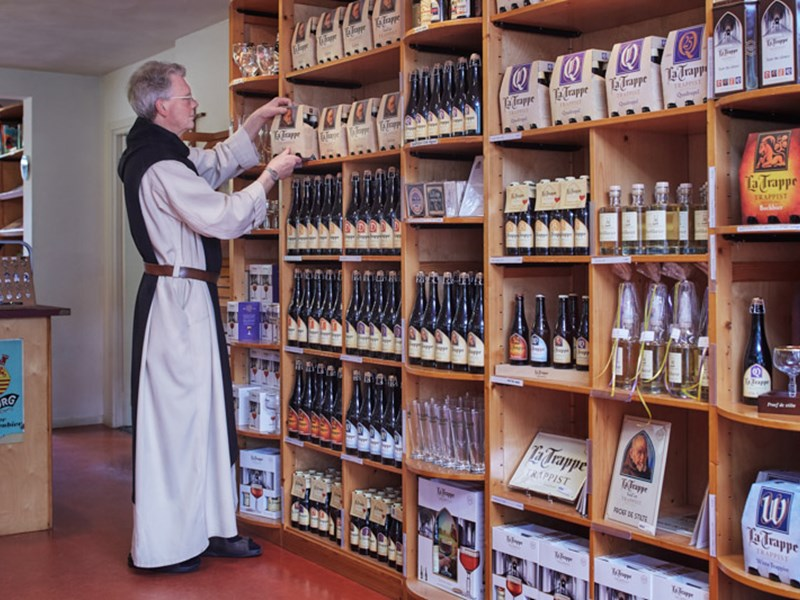
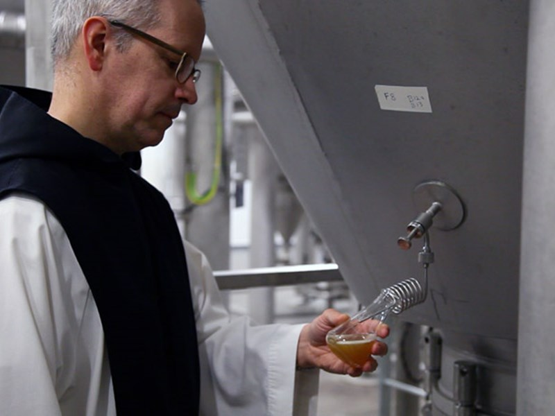

Post : September 01, 2019
ไม่ว่าจะดูยังไง ศาสนาและเครื่องดื่มมึนเมาก็ไม่น่าจะเป็นเรื่องที่ไปด้วยได้ ขนาดชาวพุทธอย่างเราๆ ก็ยังท่องจำศีลข้อ 5 กันมาตั้งแต่ไหนแต่ไร “สุราเมระยะ มัชชะ ประมาทัฏฐานา เวระ มณี สิกขาประทัง สมาธิ ยามิ…” แถมช่วงนี้ยังต้องงดเหล้าเข้าพรรษากันอีก
ขณะที่ ‘เบียร์’ กลายเป็นสิ่งต้องห้ามในหลายศาสนา เป็นเครื่องดื่มที่ทำให้เกิดอาการมึนเมา ขาดสติ นำไปสู่ความเสียหายแก่ทรัพย์สินและชีวิต แต่เชื่อหรือไม่ว่า บางศาสนาบางนิกายกลับมองเบียร์เป็นเครื่องดื่มที่ผนึกสรวงสรรค์และพื้นพิภพเข้าไว้ด้วยกัน เป็นน้ำศักดิ์สิทธิ์ที่ให้ชีวิตแก่ผู้คน ถึงขั้นที่ ‘นักบวช’ หรือ ‘เจ้าอาวาส’ มาเป็นผู้ดำเนินกระบวนการคิดค้นสูตรและลงมือหมักด้วยตนเอง
ก่อนอื่นเรามาทำความรู้จัก ‘คราฟต์เบียร์’ (craft beer) กันคร่าวๆ ก่อน คราฟต์เบียร์หรือที่เข้าใจง่ายๆ ก็คือ ‘เบียร์โฮมเมด’ เป็นเบียร์ที่เกิดจากฝีมือผู้ค้ารายย่อย มีอิสระในทุกกระบวนการผลิต ทั้งการหมัก บรรจุลงขวด และนำขาย จึงทำให้คราฟต์เบียร์แต่ละที่แต่ละยี่ห้อมีเอกลักษณ์เฉพาะตัวไม่เหมือนกัน และมีจำนวนไม่มากเท่าเบียร์ทั่วๆ ไป
แล้วคราฟต์เบียร์เข้ามาอยู่ในศาสนาได้อย่างไร?
ในสมัยยุคกลางของยุโรป เบียร์ถือเป็นเครื่องดื่มที่ช่วยเหลือประชากรที่ไม่รู้จักการกรองน้ำให้สะอาด เพราะน้ำตามธรรมชาติในขณะนั้นเต็มไปด้วยสารพิษและอาจทำให้เกิดการติดโรคได้ ดังนั้นโบสถ์ในฐานะที่เป็นศูนย์กลางของชุมชน จึงได้ยื่นมือเข้ามาช่วยเหลือและรณรงค์ให้ผู้คนหันมาดื่มเบียร์แทน ด้วยความที่เบียร์มีกระบวนการต้มน้ำที่ถือเป็นการฆ่าเชื้อโรคไปในตัว จึงทำให้มีความสะอาดมากกว่าน้ำทั่วๆ ไป และเมื่อถึงยุคศตวรรษที่ 9 ก็เริ่มมีการนำ ‘ฮอปส์’ (hops) เข้ามาใส่เพื่อแต่งกลิ่นและเพิ่มความขม จึงเกิดเป็นต้นกำเนิดของ ‘เบียร์รสพระทำ’ อันเก่าแก่โบราณอย่าง ‘แทรปปิสต์’ (Trappist beer)
ดื่มด่ำความเงียบสงบ (taste the silence)
เบียร์แทรปปิสต์เป็นเบียร์ที่ถูกผลิตขึ้นโดยคณะนักบวชนิกายแทรปปิสต์ (Trappists and Trippistines) ที่อุทิศตนเพื่อการฝึกจิตอธิษฐานและทำงานในชุมชนด้วย ‘ความเงียบสงบ’ แต่ในขณะเดียวกันนักบวชเหล่านี้ก็ได้เข้ามามีบทบาทในระบบเศรษฐกิจตลาดสมัยใหม่ โดยผลิตอาหาร เบียร์ และสินค้าอื่นๆ เพื่อจัดจำหน่ายและส่งออก โดยตั้งอยู่บนความเหมาะสม คำนึงถึงศักดิ์ศรีของมนุษย์ สิ่งแวดล้อม และสังคม อีกทั้งทุกขั้นตอนการผลิตและการดำเนินธุรกิจยังมีความโปร่งใส สามารถตรวจสอบได้อย่างเสรี
ในแต่ละวัน ภายใต้อารามที่เต็มไปด้วยความสงบสำรวม นักบวชแทรปปิสต์จะมีทั้งช่วงการภาวนาและการทำงานสลับกันไป ตั้งแต่รุ่งอรุณไปจนถึงรุ่งสาง นักบวชจะมานั่งสวดมนต์ ฝึกจิตภาวนา และศึกษาพระคัมภีร์เป็นเวลาแปดชั่วโมง หลังจากนั้นก็เข้าไปทำงานในโรงผลิตเบียร์เป็นเวลาอีกแปดชั่วโมง หรือที่เรียกว่าหลัก ‘Ora et labora’ หมายถึงการสวดมนต์และการทำงาน ที่จะต้องมีความเป็นอันหนึ่งอันเดียวกัน
‘โรงเบียร์โคนิงชูเว่น’ (The Koningshoeven Brewery) เป็นหนึ่งในโรงเบียร์เก่าแก่กว่า 130 ปี ตั้งอยู่ที่อาราม เดอ โคนิงชูเว่น เมืองทิลเบิร์ก ทางตอนใต้ของประเทศเนเธอแลนด์ เป็นสถานที่ผลิตเบียร์แทรปปิสต์ยี่ห้อหนึ่งซึ่งคนไทยคุ้นหูกันดีอย่าง ‘ลา ทราปป์’ (La Trappe) โดยมีบาทหลวงอิซิโดรัสเป็นผู้คิดค้นสูตรหมักเบียร์ขึ้นมาครั้งแรกในปี ค.ศ. 1884
โรงเบียร์โคนิงชูเว่นได้ทำให้เห็นว่าแทรปปิสต์แตกต่างเบียร์ชนิดอื่นๆ อย่างไร ด้วยความซับซ้อนและความใส่ใจเล็กๆ น้อยๆ ในกระบวนการผลิต อย่างการใช้น้ำจากบ่อน้ำของอารามที่ลึกลงไปถึง 150 เมตร รวมถึงกระบวนการหมักครั้งที่สอง (bottle conditioning หรือ refermentation) โดยการเพิ่มน้ำตาลและยีสต์ก่อนนำไปบรรจุลงขวด เพื่อให้เบียร์เกิดการหมักอย่างต่อเนื่อง และนำเข้าไปเก็บไว้ในห้องควบคุมอุณหภูมิ (warm room) ทำให้เบียร์แทรปปิสต์เป็นเบียร์ที่มีกลิ่นหอมและรสชาติที่นุ่มลึก
“โรงเบียร์แสดงให้เราได้เห็นว่าสรวงสวรรค์และพื้นพิภพไม่อาจคงอยู่ได้โดยปราศจากกันและกัน เช่นเดียวกัน โรงเบียร์ก็ไม่อาจดำรงอยู่ได้โดยไร้อาราม และอารามก็ไม่สามารถอยู่ได้หากขาดโรงเบียร์” กล่าวโดยเจ้าอาวาสแห่งอาราม เดอ โคนิงชูเว่น คนปัจจุบัน
จิบเบียร์ อิ่มบุญ (beer for charity) การผลิตเบียร์นำขายของอารามอาจดูไม่ต่างอะไรไปจากบริษัทผลิตเบียร์บริษัทหนึ่ง แต่แน่นอนว่าการผลิตของทางอารามจะต้องไม่ใช่เพื่อแสวงหาผลกำไรเข้าตัวเองเท่านั้น เพราะจะผิดไปจากหลักคำสอนของศาสนา ดังนั้น การผลิตเบียร์จะต้องมุ่งเน้นไปที่การทำประโยชน์เพื่อสังคมและการกุศล เช่น การติดตั้งระบบบำบัดน้ำเสีย เพื่อเป็นการรับผิดชอบต่อสังคมตามนโยบายด้านสิ่งแวดล้อม การนำกำไรส่วนหนึ่งมอบให้แก่ภูมิภาคที่ยากจน หรือการใช้วัตถุดิบจากท้องถิ่นอย่างข้าวบาร์เลย์ เพื่อเป็นการสนับสนุนเกษตรกรและเศรษฐกิจของคนในพื้นที่เดียวกัน
จิตวิญญาณแห่งรสชาติพระทำ (the soul of Trappist)
แม้เบียร์แทรปปิสต์จะมีส่วนผสมของการหมักเหมือนกับเบียร์ทั่วๆ ไปที่ประกอบด้วยน้ำ มอลต์ ฮอปส์ ยีสต์ แต่หัวใจสำคัญที่ทำให้เบียร์ชนิดนี้มีเอกลักษณ์โดดเด่นแตกต่างไปจากเบียร์อื่นๆ ไม่ใช่แค่เพราะว่าถูกผลิตขึ้นโดยนักบวช แต่การคงไว้ซึ่งจิตวิญญาณแห่งอารามอันเป็นที่ตั้งของโรงเบียร์ ถือเป็นอีกหนึ่งคุณค่าที่ผู้ดื่มไม่อาจหาได้จากคราฟต์เบียร์ตัวไหนๆ นอกจากแทรปปิสต์ โดยการนำมาซึ่งเอกลักษณ์นี้ ผู้ผลิตจะต้องปฏิบัติภายใต้กฎการผลิตสามประการ ที่ถูกบัญญัติโดย ‘สมาคมนักบวชแทรปปิสต์นานาชาติ’ (International Trappist Association) ได้แก่
กฎข้อแรก การผลิตจะต้องอยู่ภายในรั้วกำแพงของอาราม และอยู่ภายใต้การควบคุมของนักบวชแทรปปิสต์เท่านั้น เพื่อป้องกันการนำไปค้าเอากำไร และเพื่อให้เป็นการฝึกจิตภาวนาร่วมกันของนักบวช ที่ถูกสอนให้ปฏิบัติตนโดยใช้ความสงบ หรือที่เรียกว่า ‘วิถีชีวิตแห่งการภาวนา’
กฎข้อที่สอง กระบวนการผลิตและแนวทางการทำงานต้องขึ้นตรงและถูกดูแลอย่างละเอียดละออภายใต้กลุ่มนักบวชแทรปปิสต์ เพื่อให้ได้มาซึ่งรสสัมผัสที่มีมาตรฐานร่วมกัน
กฎข้อสุดท้าย การผลิตเบียร์ต้องมุ่งหมายเพื่อค้ำจุนอารามเพียงเท่านั้น การค้าขายเพื่อแสวงหาผลกำไรนั้นจะต้องตั้งอยู่บนความเหมาะสมและเป็นไปเพื่อการกุศลส่วนรวม ซึ่งข้อนี้เป็นกฎข้อสำคัญที่ทำให้เบียร์แทรปปิสต์มีคุณค่ามาจนถึงปัจจุบัน
จนในที่สุด เบียร์แทรปปิสต์ที่ถูกบ่มหมักออกมาตามมาตรฐานกฎการผลิต จะถูกจัดจำหน่ายและประทับตรา ‘Authentic Trappist Product’ หรือเครื่องหมายการันตีคุณภาพและความศักดิ์สิทธิ์ที่มาจากคณะสงฆ์นิกายแทรปปิสต์ ซึ่งในปัจจุบัน เบียร์แทรปปิสต์ที่ถูกผลิตโดยสมาชิกของสมาคมนักบวชแทรปปิสต์นานาชาติ และจำหน่ายตามท้องตลาดถึง 14 ยี่ห้อ
ในปัจจุบัน เบียร์แทรปปิสต์กลายเป็นที่นิยมอย่างมากในหมู่นักดื่มทุกกลุ่ม เพราะมีการรังสรรค์ให้เกิดรสชาติมากมาย ตั้งแต่หวาน เปรี้ยว ไปจนถึงขม และความหอมจากฮอปส์หลายหลากรูปแบบ เช่น ความหอมสดชื่นจากผลไม้ หรือความหอมหวานจากคาราเมล วานิลลา และช็อกโกแลต เหตุนี้จึงทำให้ตลาดเบียร์แทรปปิสต์ค่อยๆ ขยายใหญ่มากขึ้น จนล่าสุดสำนักสงฆ์ Saint-Sixtus ผู้ผลิตเบียร์แทรปปิสต์ยี่ห้อ Westvleteren XII ได้ออกมาประกาศจำหน่ายเบียร์ผ่านระบบออนไลน์ เพื่อเป็นการขจัดปัญหาในการเก็งกำไรของพ่อค้าคนกลางและตลาดมืดที่ต้องการแสวงหาผลประโยชน์ รวมทั้งยังเป็นการจำหน่ายเบียร์ให้ไปถึงมือคนต่างชาติที่อยากดื่มแทรปปิสต์จริงๆ อีกด้วย
Trappist Beer ทำให้เบียร์กลายเป็นหนึ่งเดียวกับศาสนาบางนิกายได้อย่างลงตัวโดยไม่เป็นเรื่องที่ผิดบาป เนื่องจากเป็นเบียร์ที่ถูกผลิตขึ้นด้วยหัวใจ การอุทิศตนของคณะสงฆ์ และประโยชน์ที่มุ่งหวังเพื่อสังคมส่วนรวม